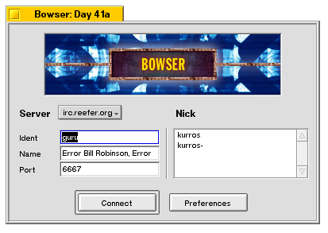
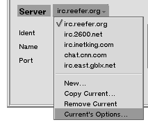

- Server

You can select which server to connect to here, as
well as add servers, remove servers, and configure server-specific
options. The currently selected server is indicated by a checkmark.
- Selecting "New..." will prompt you for the hostname of the server
you wish to add, make the new server active, and will blank the user
options which you must fill in (nick, name, etc.)
- Selecting "Copy Current..." will prompt you for the hostname of the
server you wish to add, make the new server active, and will copy the
user options (nick, name, etc) of the current server to the new one,
saving you time.
- Selecting "Remove Current" will remove the current server from the list.
There is no warning prompt.
- Selecting "Current's Options..." will open the Server Options window.
- Ident
This is your IRC username, and appears to other users as part of your IRC
hostmask. eg: username@dialup.gate.net. Other users will see this when you
join a channel, or when they /whois your nickname.
- Name
The IRC gods intended this to be used for your real name, but most people
just put a non-sensical cute phrase here (as is depicted in the screenshot).
Other users will see this when they /whois your nickname.
- Port
This is the port of the IRC server that Bowser connects to. Almost all public
servers listen on port 6667 (among other ports, but i'll try to stay on topic).
- Nick
Here you specify the nickname you would like to use on the selected server.
The right click menu presents you with three options:
- Selecting "Add" will prompt you for nickname to add to the list
- Selecting a nickname then "Remove" will remove the nickname from
the list.
- Selecting "Load" (greyed out unless you make changes) will reset the
nicklist to what it was before you started messing with it.
To arrange the order of nicknames you can use the Shift+Up-Arrow/Down-Arrow
keys. Bowser will attempt to use them in the order displayed. In the
screenshot above, if the nickname "kurros" is in use, Bowser will try
"kurros-".
- Connect
Connects to the currently selcted server
- Preferences
Opens the Preferences window.
|
|